上一篇文章提到我们最近开了个新项目，目的是将新的业务放到新项目中，老项目单独维护，再逐步迁移老项目到新项目里。但就在前端时间生产环境发生了一个事故，事故开始的异常是我们的业务发现前端h5页面办理很慢，这台服务器跑了三个省的办理业务，同事在寻找问题的时候一口老血差点吐出来，所有的项目日志打在一个文件里，里面乱的程度无法用语言形容，因为太忙了的原因，这个事情被安了一个网络不好的头衔不了了之了，但是最气的是周五晚上下班后越来越多的业务反应，大家没有带装备，只能在群里猜测分析各种原因，不得已周六大家来到公司寻找这个问题，看了近几天的日志发现是项目里一个统计的接口被频繁调用导致我们的cpu跟内存跑满了，抛开程序效率问题与sql效率的问题，发现是同一个ip一直在请求我们，一天刷了8万多请求，这就不继续吐槽了。程序完全没有做任何容错措施，先不说限流，就对于接口调用超时的情况我们就可以用到我们要说的hystrix。他的代码托管在github上：
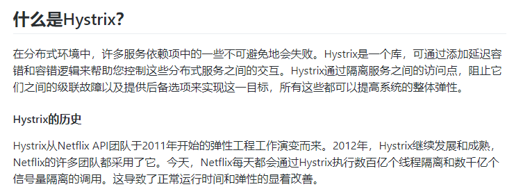
来自：https://github.com/Netflix/Hystrix/wiki
简单的说他可以帮我们完成程序在出错或者延迟的情况下对程序熔断降级，假设我们老项目有这种机制，我们内存跟cpu跑满的情况下，我就可以熔断，将主逻辑降级，由我们辅逻辑来快速返回前端，这样c端用户体验感就没有那么差，我们也不会那么狼狈的去找问题。springcloud已经帮我们集成好了，我们只需要添加少量的注解跟配置就可以使用了。
一、使用
上一片文章最后我们用feign搭建好了一个项目，在pom文件添加配置：
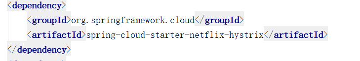
改造之前写过的controller：
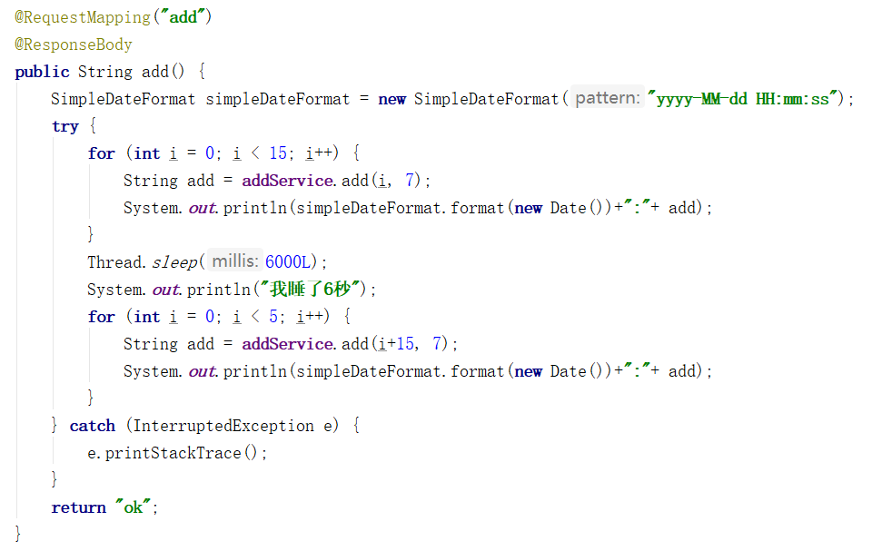
我们发送20个请求，等前15个发送完成我们休息6秒，前15个请求我们演示熔断器打开并降级的过程，后5个演示当服务端恢复正常的熔断器关闭的情况：
继续改造service，feign集成了hystrix，hystrix使用是通过方法来完成降级逻辑的，使用feign是通过接口的方式调用的，所以使用起来需要在
@FeignClient注解添加参数：
fallback标注了降级方法的类，创建降级类
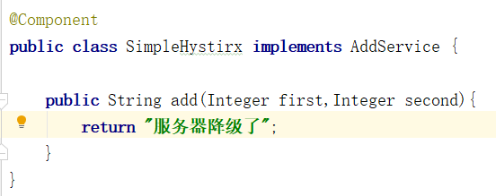
配置文件添加配置
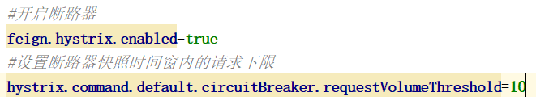 feign集成hystrix在spring cloud早期的版本是默认开启的，如果使用了feign就默认开启了断路器，所以后来的版本断路器功能就默认关闭，下面介绍几个重要的参数配置：
1.hystrix.command.default.circuitBreaker.requestVolumeThreshold：用来设置快照时间窗内的请求下线，默认为20，在一个快照
时间窗内的收到请求没有达到这个数量即使都失败也不会触发熔断
2.hystrix.command.default.circuitBreaker.sleepWindowInMilliseconds：用来是设置断路器半开状态的时间（断路器在半开状态
允许发送一条请求，如果请求成功断路器关闭，失败则继续断开等待下一次半开状态）默认5000毫秒
3.hystrix.command.default.execution.isolation.thread.timeoutInMilliseconds：用来设置请求超时时间
4.hystrix.command.default.circuitBreaker.errorThresholdPercentage：用来设置错误率，默认值50，在一个快照时间窗内超过了
请求下线，失败率超过50%，断路器打开
上面写的配置为全局默认的配置，配置的优先级从低到高分别是：全局默认配值，全局属性配置，实例默认值，实例配置属性，列举一个隔离策略配置
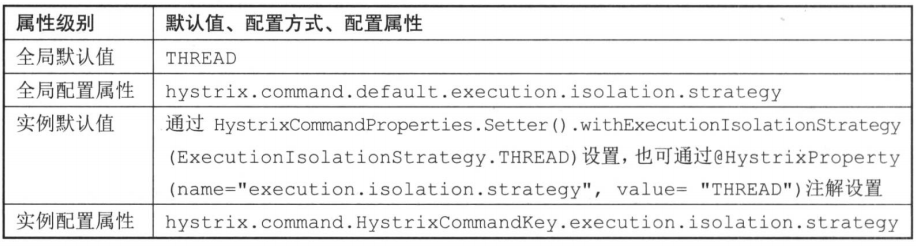
实例属性配置需要将default改成你的就可以了，除此之外还有很多配置，分享一个链接：https://www.cnblogs.com/520playboy/p/8074347.html，spring cloud微服务实战这本书里有更详细的配置详解 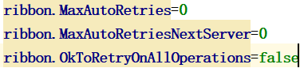
ribbon.OkToRetryOnAllOperations：对所有操作请求都进行重试
ribbon.MaxAutoRetriesNextServer：切换实例的重试次数
ribbon.MaxAutoRetries：对当前实例的重试次数 除了上面的配置我们还需要添加一个配置，目的是关闭feign的重试机制，原因是不想让接口超时触发重试机制。feign是通过整合ribbon来完成负载均衡，默认重试测试时5次，可以看feign包下的Retryer类，里面
的default方法。继续，我们修改上篇文章的服务提供者的方法：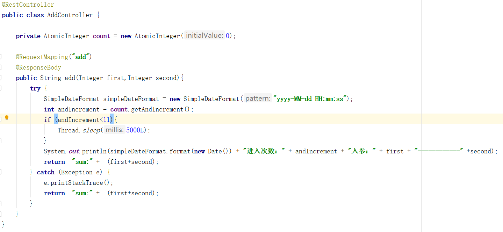
代码完成：我们来访问接口：http://localhost:8886/add
客户端控制台：
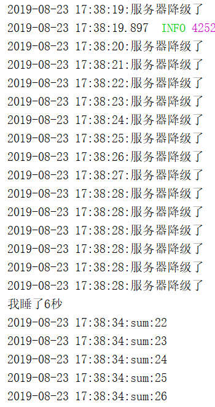 服务端控制台：
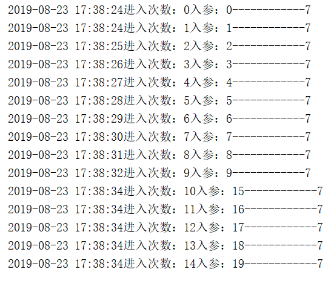
通过两端的打印信息可以看出来前总共调用20次，15次调用后等待了6秒继续调用五次，服务端收到请求15次从入参能看出来第11次到第15次没有请求到服务端，这个过程就演示了熔断器的整个过程，我们通过配置文件
设置请求下限为10，而服务端的前10次请求都会调用超时，所以客户端前10次请求都会触发降级方法，最终熔断，使得我们的请求快速返回，第16到第20次的时候由于线程休息了6秒，此时断路器的半开时间早已经达到，所
以第16次请求的时候hystrix会放行一个请求，发现没有超时，熔断器关闭，后面的16-20请求就反会正常结果，程序又切回主逻辑。
演示一下ribbon使用hystrix，使用上一篇文章创建的项目，添加pom文件，创建一个service把逻辑放到service中：
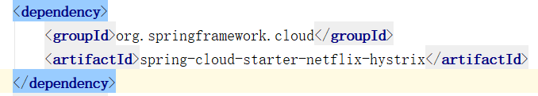 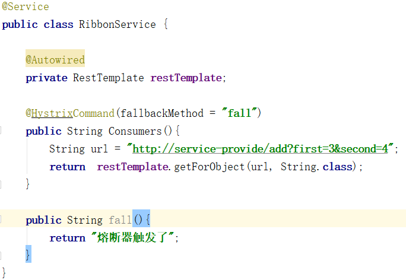
在需要熔断的方法添加@HystrixCommand注解，标注降级方法，修改controller方法，访问：http://localhost:8884/add
二、工作流程
通过上面的例子我们简单分析一下hystrix流程，我们先引用一张HystrixCircuitBreaker官方的流程图：
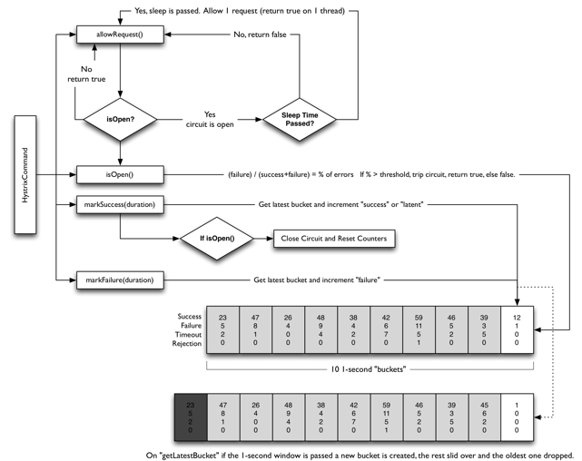第一步：HystrixCommand调用allowRequest方法判断请求是否允许通过，如果熔断器强制打开不允许放行，如果熔断器强制关闭允许放行，circuitBreaker.forceOpen配置优先级比circuitBreaker.forceClosed优先级高
第二步：调用isopen方法判断熔断器是否打开，如果打开则判断circuitBreaker.sleepWindowInMilliseconds进入半开模式的时间，如果距离上一次打开时间超过设置时间，将进入半开模式，放行一个请求，走第一步
第三步：熔断器未打开，判断一个请求窗内的请求下线circuitBreaker.requestVolumeThreshold，小于放行，否则判断一个时间窗内的错误率小于circuitBreaker.errorThresholdPercentage，则放行，大于则打开熔断器，走第二部
三、浅谈源码
我们从feign包下找到HystrixFeign类，里面有几个方法，第一个创建HystrixInvocationHandler：
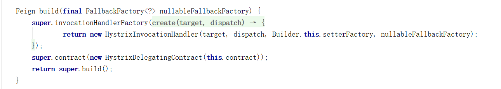第二个方法初始化HystrixCommand的setterFactory工厂
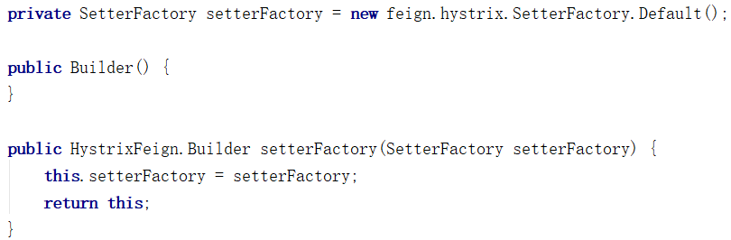
HystrixInvocationHandler类里调用invoke（太长就不截图了）方法重写了降级方法，通过代理模式将hystrix包装feign。通过toSetters方法给方法设置配置项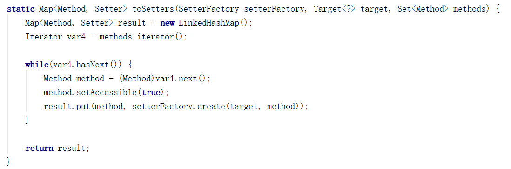
setterFactory里通过create方法生成配置项
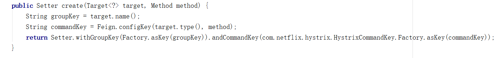
groupKey是接口名称，还有一个commandKey，继续往下：
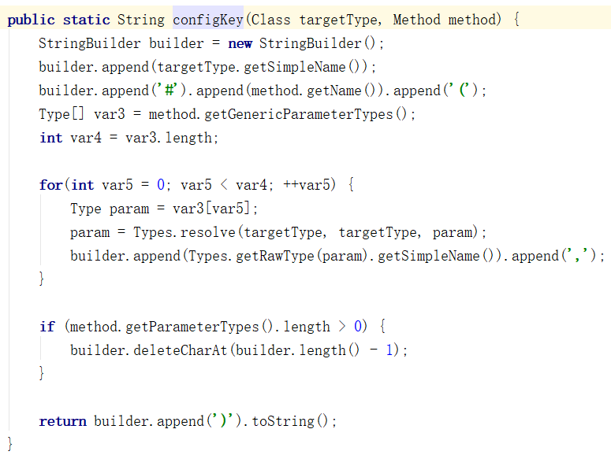
通过接口名跟方法名属性名拼接生成commandKey，文章上面写到几个属性的配置以hystrix.command.default.circuitBreaker.requestVolumeThreshold为例，我们这样配置是设置了全局默认属性配置，通过上面的分析我们可以改成这样配置hystrix.command.AddService.circuitBreaker.requestVolumeThreshold，这就是上面提到的事例默认值配置，对应我们刚刚写的类：
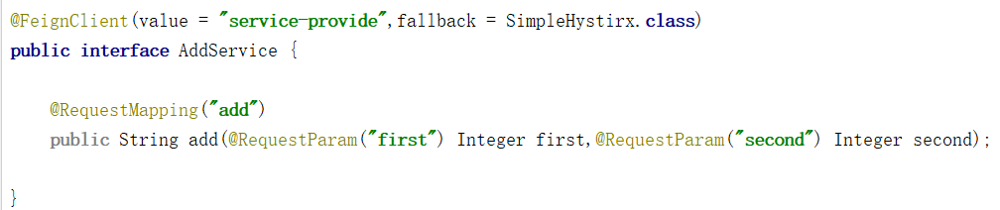
我们再来看看hystrix的配置类HystrixCommandProperties，它包含了大量配：
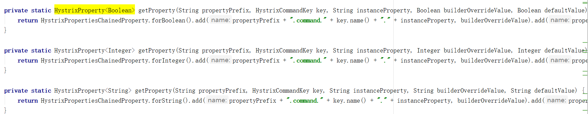
通过片段能看出来传入一个前缀，然后拼接key加上后面的字符串然后为属性赋值，这个key就是我们前面讲到的configKey，没有配置采用默认key。
文章前端时间就写了，由于来了一个比较急的工作，忙的连着几个通宵所以一直没有发布，写的时候也有遗漏，还请大家多多指教。